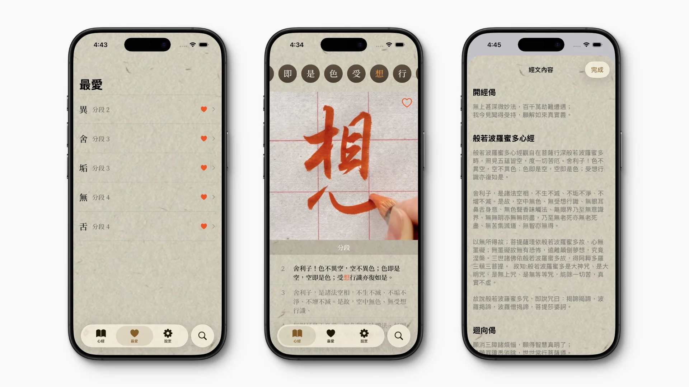

Privacy Policy
我們不使用任何追蹤或分析工具。您新增至本 App 的所有資料都只會保留在您的裝置上。
Contact
如果您有任何問題或意見回饋，歡迎 聯絡我們。
本 app 以《心經》為內容，提供完整逐字行書示範。 每一個字皆為獨立書寫影片，並可循環播放，讓學習者能清楚理解筆順、運筆與節奏，而不再僅依賴靜態字帖臨摹。
透過反覆觀看與跟寫練習，使用者可在觀察筆畫起收、轉折與連帶關係中，自然建立書寫感與結構理解，降低入門門檻，使書法學習更直觀、穩定且容易持續。

Soon on the App Store
我們不使用任何追蹤或分析工具。您新增至本 App 的所有資料都只會保留在您的裝置上。
如果您有任何問題或意見回饋，歡迎 聯絡我們。